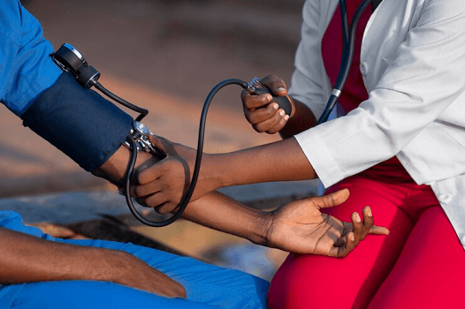
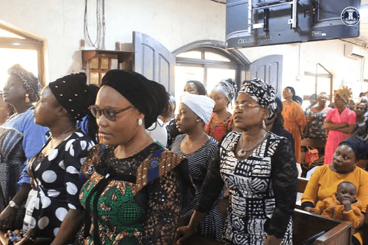
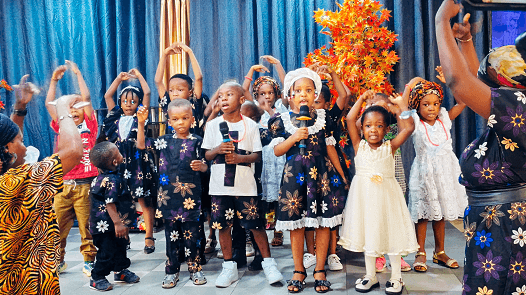
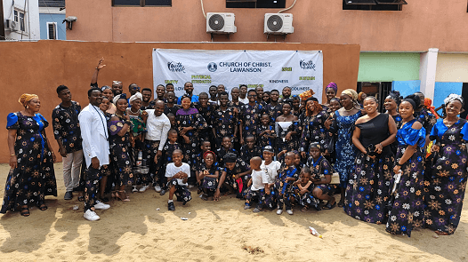

Administrative Ministries
Ensuring orderliness while administring record keeping of church.
Secetariat Ministry
Provides orderly and efficient support, record keeping to the daily operations of the congregation.
Finance Ministry
Careful transparent management of the financial resources God has given to the congregation.

Publicity Ministry
Preparation and projection of audio visual contents to aid the activities of the congregation.
Fellowship & Community
Serving our members and our neighbours with love.
Evangelism Ministry
Reaching out to our local community through preaching of the gospel via door-to-door, open air and Annual lectures.
UPCOMING EVENT
Annual Bible Lectures
25th AUG - 30th AUG, 2026

Health Ministry
Promoting wellness in mind, body, and spirit. We offer health screenings, seminars, and counseling support.
UPCOMING EVENT
Immunization 0 - 5years
3rd JUN - 6th JUN, 2026

Sister's Ministry
A supportive space for women to connect, pray and grow through bible study and shared life experiences.
UPCOMING EVENT
Sister's Lectures
2nd MAY, 2026
Nurturing the Next Generation
Equipping our kids and teens with a foundation of faith.

AGES 3-12
Children's Ministry
Building a foundation of faith through stories, play, and creative learning while ensure a safe and fun environment every Sunday.

TEENS & YOUNG ADULTS
Youth Ministry
Empowering young people to lead and grow in their relationship with Christ through relevant teaching, activities and outings.
SINGLES
Singles Ministry
Supporting and connecting singles to fellowship with home-building events while understanding the Lord's will for their lives.